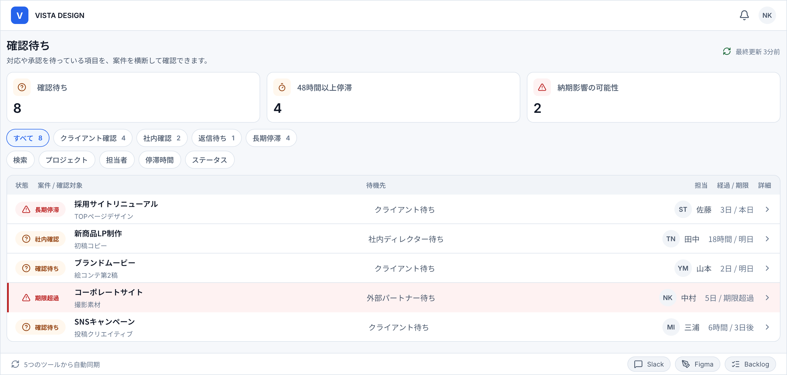
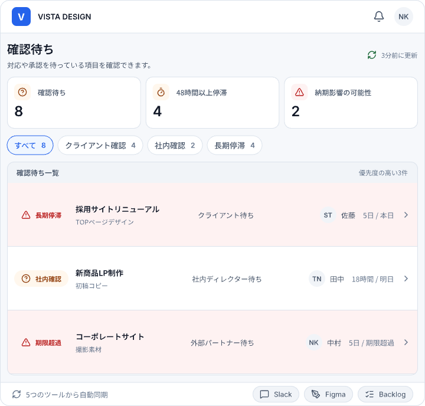
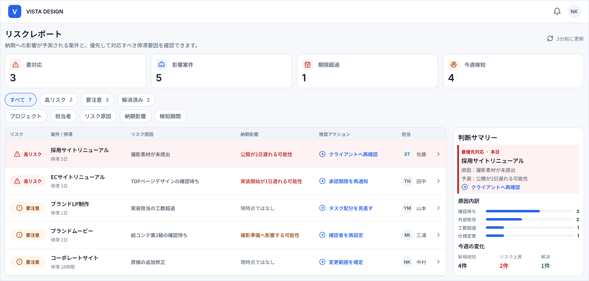
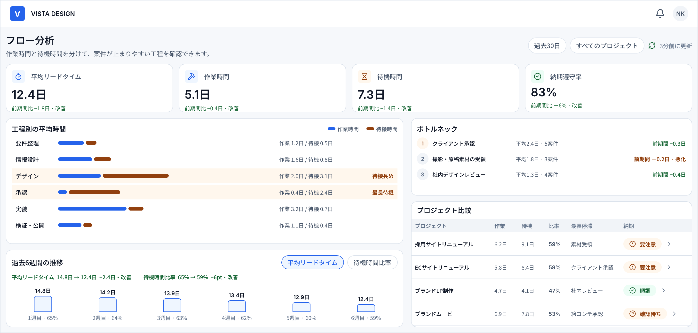

確認待ちが埋もれる
誰の返答を待っているのか、チャットやメールを遡らないと分からない。
PROBLEM
Slack、Figma、Backlog、メール。制作進行の情報がツールごとに分かれるほど、確認待ちや担当の滞りは見つけにくくなります。
誰の返答を待っているのか、チャットやメールを遡らないと分からない。
複数案件の進行・担当・期限を、横断して把握することが難しい。
問題が表面化するまで、停滞や納期リスクを発見できない。
VISTAは、散らばる進捗をひとつの視界にまとめます。
SOLUTION
連携したツールから案件の動きを集め、確認待ちや停滞リスクを見つけ、
次に対応すべきことを明確にします。
STEP 01
Slack・Figma・Backlogなど、制作進行に使うツールを連携。
情報を自動集約
STEP 02
確認待ちや更新の止まった案件を、VISTAが横断して可視化。
停滞リスクを検出
STEP 03
担当・期限・待機先を確認し、次に対応すべき案件を判断。
次の対応を明確化
FEATURES
案件ごとの進行状況だけでなく、確認待ちの相手や停滞時間、
納期への影響までまとめて確認できます。
FEATURE 01
クライアント確認、社内承認、返信待ちなど、クライアント確認や社内承認など、対応が止まっている項目をひとつの画面に集約します。
WAITING




FEATURE 02
更新が止まっている案件や、納期への影響が考えられる進行を自動で抽出。問題が表面化する前に対応できます。更新が止まった案件や納期への影響を抽出し、問題が表面化する前に対応できます。
RISK
FEATURE 03
案件や担当者ごとの確認待ち時間、や停滞傾向、進行状況を可視化し、制作フローの改善振り返りと改善につなげます。
ANALYTICS


PRICING
制作体制やプロジェクト数に合わせて、3つのプランをご用意しています。
すべてのプランで確認待ちと停滞リスクを可視化できます。